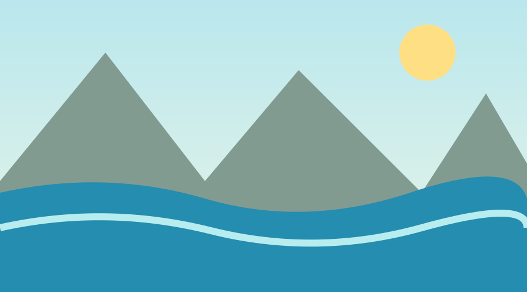
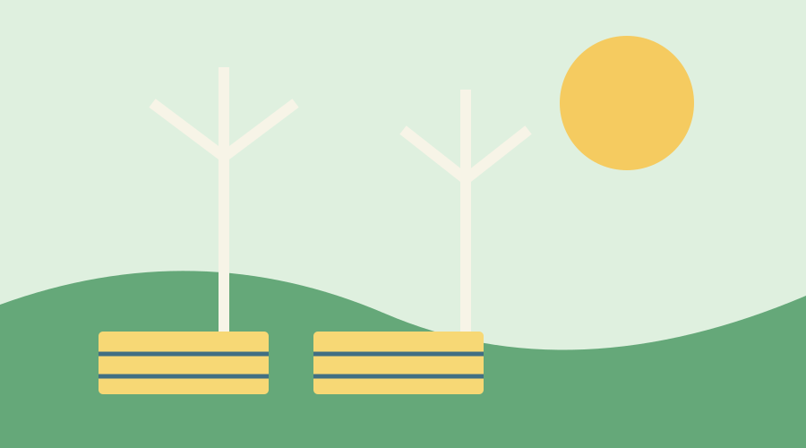
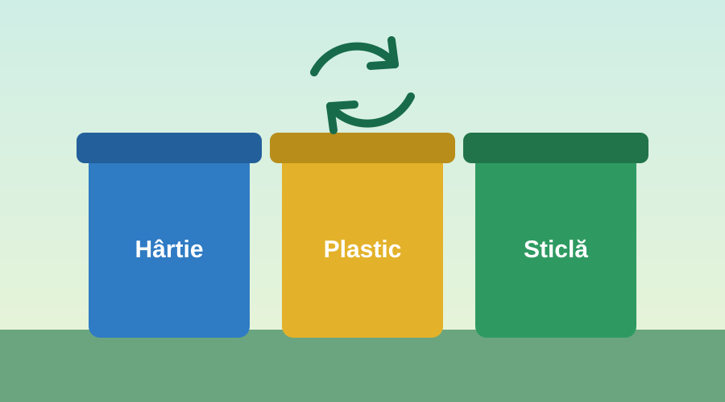

Pădurile
Copacii curăță aerul și oferă adăpost multor viețuitoare.
Natura este casa noastră. Hai să avem grijă de ea!
Descoperă mai multBINE AI VENIT
Pământul ne oferă aer, apă, hrană și locuri minunate. Fiecare dintre noi poate contribui la păstrarea unui mediu curat prin gesturi simple și responsabile.
Copacii curăță aerul și oferă adăpost multor viețuitoare.

Toate formele de viață au nevoie de apă curată pentru a supraviețui.

Energia solară și eoliană pot reduce poluarea mediului.
Schimbările mari încep cu obiceiuri mici. Iată câteva exemple:

Un mediu sănătos înseamnă o viață mai bună pentru oameni, animale și plante. Este important să acționăm împreună.
Înapoi la începutul paginii · Vezi imaginile despre natură
Resurse utile: Programul ONU pentru Mediu și World Wildlife Fund.
Exemplu de element multimedia HTML. Videoclipul se încarcă de pe internet.